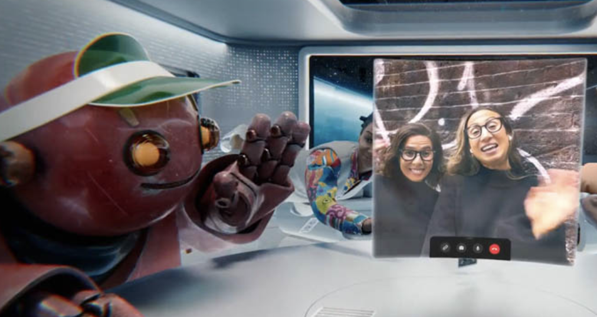
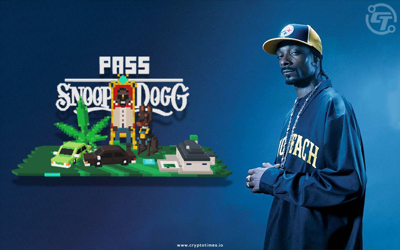
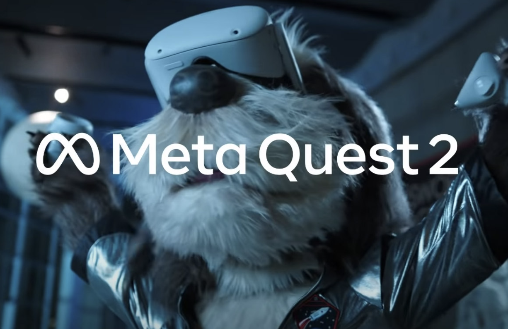

Below are three articles that touch on the topic of marketing in the Metaverse. Although
marketing in the Metaverse is in it's earliest stagest, organizations have already begun
experimenting. These articles will provide examples and further explination on how concepts
in the article apply to what we have learned in class.

This video example has Mark Zukerberg show what the metaverse could look like in the future.
It could have features from your physical home, an avatar that looks however you want it to,
desired places or scenery, and much more. You can meet with your friends without meeting up
with them in real life, play games with them such as cards or even look at 3D art. You can
even video call your friends or family while your in the metaverse, and they are in real life.
The metaverse brings anything that you would want to do in real life, and makes it accessible
at your fingertips.

This article describes what the future of marketing in
the universe could look like. A person purchased a property for 500,000 in Snoop Dogg’s
metaverse platform the Snoopaverse. With property costs ever increasing in this new
virtual world wealthy investors have the opportunity to invest in properties on this
new platform that have real world values and money involved. People will have the ability
to purchase virtual properties beside their favourite influencers, creators, and heroes.
This shows the beginning of marketing in the metaverse and the future possibilities that
these platforms create.

This ad was showcased this year at the superbowl and showcased
the Quest 2, a VR headset produced by Meta. This ad shows an animatronic character being
forgotten about and finding joy within the virtual reality world. This has gotten mixed
feelings from consumers, as it seems like Meta is implying that the world is becoming such a
bad place to live in, so you might as well give up hope and live virtually. This ad is clearly
trying to connect to the emotions of consumers and has them confused on whether they should
relate to the animatronic, or rather feel bad and emphasize for him. Either way, this was a
bold choice by Meta and it has been met with some mixed feedback.